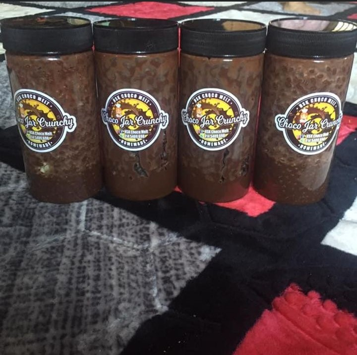
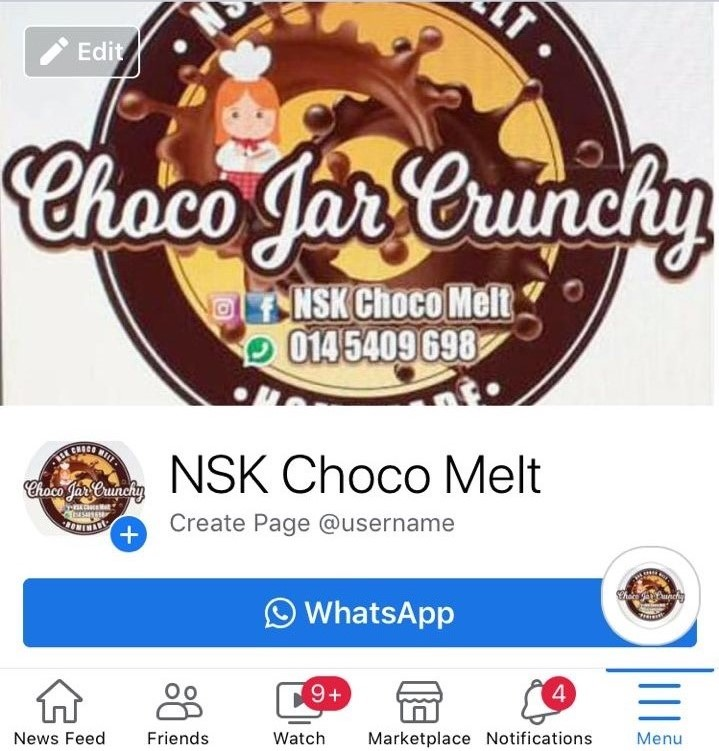
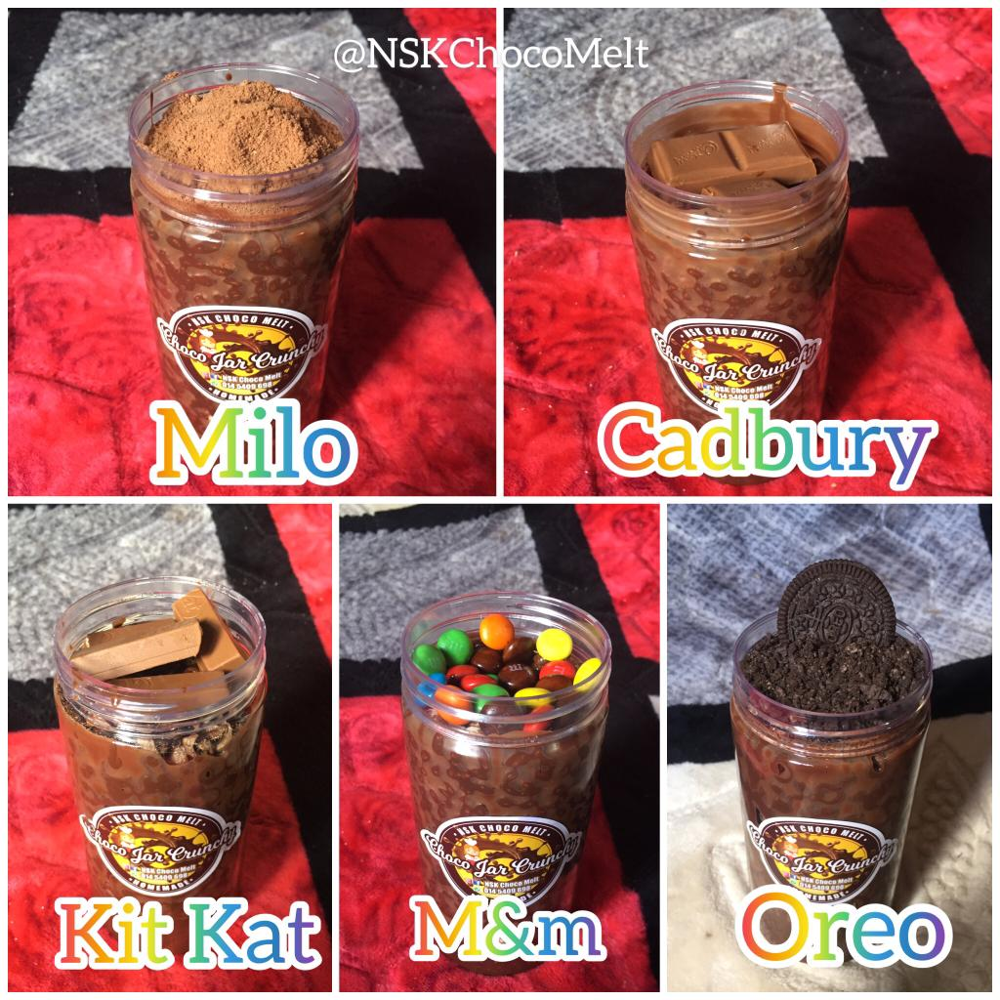
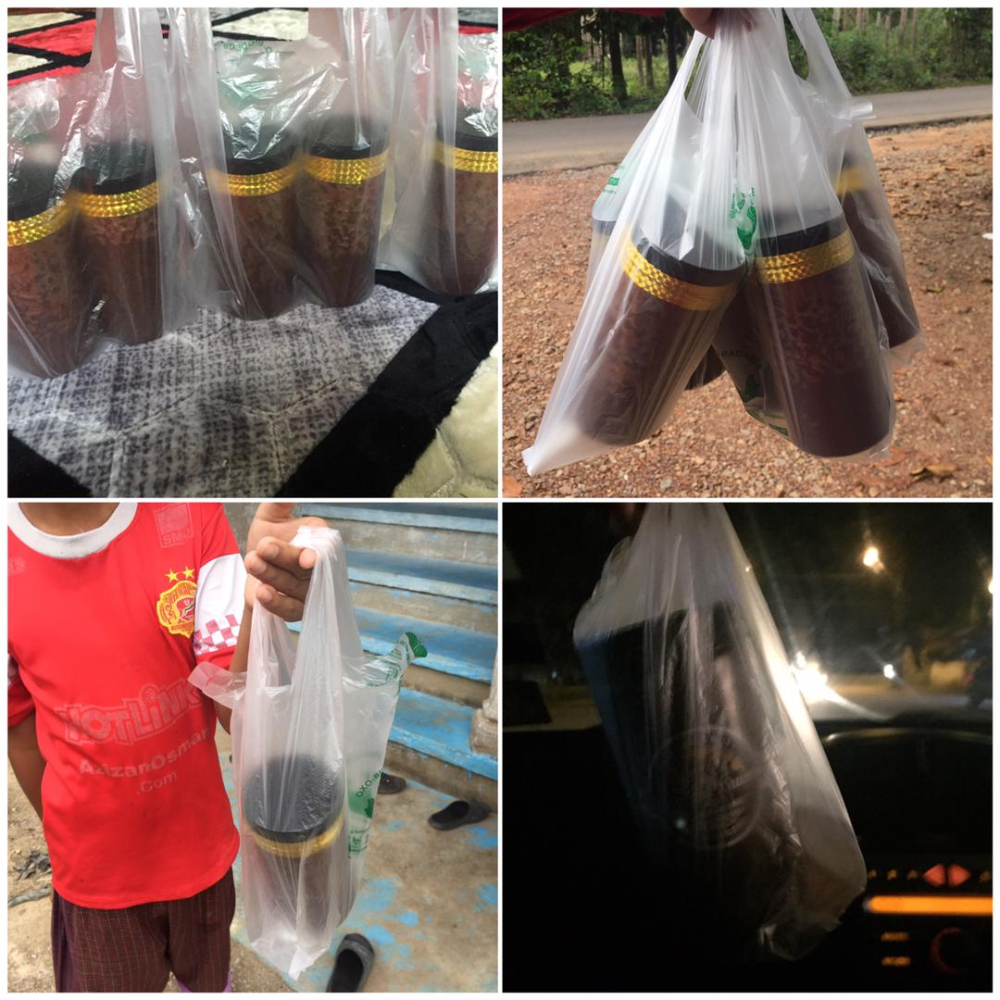

| I have my own experience in venturing into business for almost 2 years since pandemic covid-19. My purpose of running my business is to find side income while studying because as we all know since the pandemic our country has experienced severe financial problems and many people out there including me have also lost their source of income.
I sell food products that are choco jars from "NSK Choco Melt". The Choco jar is a cereal like mini Choco crunch, bubble rice with chocolate sauce. The sauce has two flavors, which are chocolate sauce and white chocolate sauce. Then, there are many topping options including Kit Kat, M&M chocolate, Milo, Oreo, and Cadbury. Choco jar is also among the famous food right now and become a favorite of many regardless of children, adults or the elderly. That's why I choose to sell this product. Plus, Choco jar is also my favorite food. I have a lot of experience either bitter or sweet that I gained throughout running my business. Among them are difficulty of attracting customers to buy my product. I began to feel frustrated and sad because no one wanted to buy my product even though I had tried various ways. The second challenge that I faced challenges with competitors. As we all know many people out there including celebrities also sell the same product. This indirectly affects my business because most people out there or customers are interested in buying products from well-known owners especially scales from artist releases as well as from viral products. The sweet experience was that the next day my business started getting attention by outsiders since I promote on social media platforms through Facebook and Whatsapp. Day by day my orders are increasing, many of my friends also support me to buy the products I sell. In addition, many children in my home area want to buy my Choco jar, I also make cash on delivery (COD) because it is close to my house. Overall, business taught me a lot of patience, effort, and not giving up. I also didn’t expect my business to get much response from customers out there even though at the beginning it was very difficult to get orders. I am also proud of myself for being able to make a commitment between my work and my studies. Although I am studying, I can also earn a side income while looking for work experience. |
| PICTURES | DESCRIPTION | PICTURES | DESCRIPTION |
|  |  | ||
|  | 5 Toppings Delicious
|  |